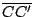

．作者任教於香港科技大學數學系
四、空間中的平行與垂直
——平直性與對稱性的交互作用
——平直性與對稱性的交互作用
項武義
|
1│2 |
．作者任教於香港科技大學數學系 | ||
|
四、空間中的平行與垂直
——平直性與對稱性的交互作用 項武義 |
|
本章將進而研討定量空間（亦即立體）幾何的基礎理論。在空間的種種性質之中，最為基本而且影響無比深遠者，首推對稱性 (Symmetry) 和平直性 (Flatness 或 Rectilinearity) 。兩者在三角形上的表述分別就是「S.A.S. 疊合條件」 和「三內角和恆為一個平角」。我們將會分別對于平直性和對稱性在立體幾何中的表現作一番返璞歸真的分析，而其所展現者，乃是空間中的「平行」與「垂直」以及兩者之間的密切關聯。其實平行與垂直乃是整個定量立體幾何的基礎所在，當然也就是同學們學習立體幾何的起點與要點所在。
在平面幾何中，同學們熟用如 [圖 4-1] 所示的同位角相等來檢驗或構造平行線：
[ 圖 4-1 ]
在引言和第二章中已經和同學們討論過，上述驗証條件的可行性其實和「三角形內角和恆等于一個平角」是同一件事的兩種表現。而歐幾里德的著名「第五公設」也就是以公設形式宣稱上述條件就是 開宗明義，在空間中點、直線、平面之間的連結與交截，具有下述三點基本性質（通常也稱之為公理）： 其一：相異兩點定一直線，不共線三點定一平面。 其二：平面 Π 上相異兩點所定的直線會完全包含于 Π 之內。
其三：設
（亦即非空），則 空間中平行性的定義：
(i) 面、面平行之定義
(ii) 線、面平行之定義 (iii) 線、線平行之定義 注意：線、線平行關係要求兩者必須共面。兩條不共面的直線的關係則稱之為不交線 (skew lines)。
【引理 4.1】：設
,
,
，則
証明：若 則顯然有 □
在平面幾何中關于平行線的一個基本結果是過平面上任何給定點 P，存在唯一一條直線 ，它和給定直線
同樣的，在立體幾何中我們也有下述定理：
【定理 4.1】：對于一個給定平面 Π 和一個給定點 P，存在唯一的一個平面
証明：我們將用解作圖題的手法和精神去証明上述 
[ 圖 4-2 ]
當
由[引理 4.1]得知
再者，由平面幾何中平行線的唯一性可知 , 分別在 其實上述論証業已明確地指出這樣一個 的構造作圖法。現在直截了當地用構造來証明其存在性：
第一步：在 Π 上任取相交的兩條直線
第二步：用平面幾何所熟知的作圖法分別在 其中至少有一是非空的，和所作 , 相矛盾。 □ 【推論】：設 和 ，則 。
証明：設
。令 P 為 中一點，則 Π 和 都是過 P 點而且和 平行者。所以由 [定理 4.1] 的唯一性得知 ，亦即
【引理 4.2】：設 ,
[ 圖 4-3 ]
証明：
同理亦有 由此可見，在 是 1-維時三線相重，而當其為 0-維時則三線共交于一點，即 。再者，當 時，則有
【定理 4.2】： 設
証明：若三線中有兩線相重，則上述命題顯然成立。所以只需討論三線相異的情形如下：令
在 由[引理 4.2]即有 兩兩互相平行。所以
【推論】：設
証明：連結
,
和
。由所設和平面幾何中平行四邊形的特徵性質定理，可見
和
都是平行四邊形。因此
，
而且等長。由[定理 4.2]，
而且等長。所以
也是平行四邊形。就這証明了
[ 圖 4-4 ]
【習題】：
|
對外搜尋關鍵字： ．平行 ．垂直 ．第五公設 ．反射對稱 ．平移 ．旋轉 ．反射定律 |
|
|
|
|
（若有指正、疑問……，可以在此 留言 或 寫信 給我們。） |
|
|
|
EpisteMath (c) 2000 中央研究院數學所、台大數學系 各網頁文章內容之著作權為原著作人所有 |
| 最後修改日期：6/19/2004 |